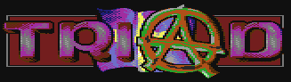

|  |
| A
brief history of Triad, along with an interview of King Fisher by [HamsTeR] |
| As
part of Scenelink's ongoing commitment to document the history of the scene, we
present an article featuring one of the legendary groups of the Commodore 64
scene. When thinking back to the days of the Commodore 64, many groups come to mind: Fairlight, WCC, the Byterapers, Eaglesoft, and, perhaps the most famous, Triad. The group was formed in July of 1986 from a loose coalition of three other groups (3001, COD, and Mr. Z of SND). Ixion, who was integral in organizing Triad, soon became its leader. A few weeks later in August of 1986, a short intro was released to officially announce the birth of Triad. Soon the three parts of a successful group were in place. First, there was a steady supply of originals from members who worked in the software industry. Triad also had many well known and respected crackers working for it (most notably, Mr. Z). Finally, Triad members had contacts around the world to whom they could spread their releases. With the key elements in place, Triad flourished. Over the next several years, hundreds of games were released to the hungry masses. Triad suffered a near critical setback in 1988 when Ixion retired as founder and leader. For a couple of months it appeared Triad may die. However, 801 DC stepped up as interim leader and kept the fire burning. Jerry joined 2 months later as leader and continues to this day as the main organizer of Triad. Triad continues to be active in the C=64 scene today. Our interview is with King Fisher of Triad. After belonging to such groups as the Byterapers and Royalty, he was invited to join the Triad team as a coder and cracker. He is responsible for maintaining the Triad homepage, and continues to play a critical role in the Triad organization. |
| An
Interview with King Fisher of Triad |
|
|
| What is the thing that you remember most fondly about your time spent as a part of the C=64 scene? |
| The people. No doubt. Whereas the relation between me and my machine was sort of formal, the people I met through the Scene made a lasting impression. It also learnt me what a society is, and that if there is enthusiasm enough, you can do without money and hierarchies. |
| To put things in perspective, who would you say were the major players in the scene at the time? |
| Well I really didn't have the perspective of "major players" or "elites" towards anyone. If somebody did something interesting or was an interesting person, I would notice that, perhaps have a chat with them at a copyparty. Looking back, the typically "adolescent" or "growing up" attitude you had back then is sort of cute. I mean all these "the w0rlds number 0ne", "phear us" etc, it was rather harmless after all. You just were not such a critical mind at the time, and I really can't remember if I actually believed these people to be superior in any way... |
| To what do you attribute Triad's success in the scene? |
| They were at the right place at the right time with the right people. It was as simple as that. Also the name was great. Ixion, the founder, was also a bit older than the rest and had a lot of good ideas. Then Jerry took over Triad and he was a firm force always finding new good members as the old ones left, much the same way that Ixion recruited Janitor when Mr.Z decided to quit. |
| What was your favorite Triad release of all time? |
| World Games by Mr Z, one of the first good cracks I got. |
| Do you still follow the scene? How do you think it has changed since the days of the C=64? |
| I still do. However a bit lazily from time to time. To me everything has mixed up, I cannot separate the people doing the C64 business from the guys trading PC warez and MP3. I have a tendency to follow every new trend there is... The Scene nowadays is Internetbased whereas it used to be board / mailswap based. That changes everything. |
| Who would you pick out as the most influential members of the C=64 scene? |
| Strider (Fairlight), Jeroen Tel (MON), Jeff Smart (Triad), Ian (Fusion), Honey (1001 Crew), White (Judges), PHS (CCS), TMC aka Charles Deenen and the Eaglesoft guys. (I didn't really think this over very deeply.) |
| Can you describe the typical release of the C=64 days? |
| It varied over time. The typical release for us was a good cracked, good packed, good trained and quite fast one with a tiny intro. Some other guy's releases weren't that good, just faster. Other guys also added FAT UGLY intros. (Some were fat and cute.) |
| Where did you get most of your releases? |
| It varied. From contacts mostly, some I bought. |
| How aware do you think that law enforcement was to what groups like Triad were doing? |
| Police you know... They don't know computers
that well. Before the 1985 movie War Games they didn't even know you could do
anything with computers. Then they formed expertise to counter netrunners,
network intruders. There was no court cases on piracy in Sweden until 1989. That
was when it was outlawed here too. I know other countries had this kind of
police earlier... Also the police didn't give a shit about crackers, the only
thing that bothered them were the pirates that sold games on the black market.
They understood very well that the people cracking and the people selling the
games were not the same.
The police didn't care about Triad. However the software importers did. But that is a totally different story... |
| What was the thing you disliked most about the scene? Any particular groups or people that you just couldn't stand? |
| I could stand all groups. Some people you know, they are not mentally sane. That kind of people you will find all the way through your life, and well, I don't want to name them. They have trouble enough as it is already. |
| Finally, is there life after the C=64? <grin> |
| There was life after the Apple II so ther must
be life after the C64. Actually I don't understand why people say the PC scene
sucks and so. It is not worse, just different. I guess some guys hate that they
will have to start from scratch in order to enter the new scenes, and that is
why they always proclaim the C64 Scene to have been "better". I try to
keep pace with my time and join everything new that comes up. To me it is not a
case of "either-or" but rather "both-and".
OK! Yours, Linus aka KF / Triad |